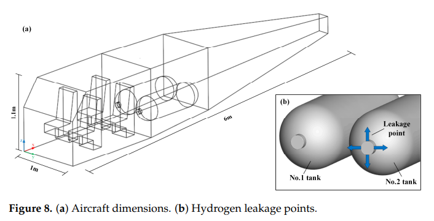
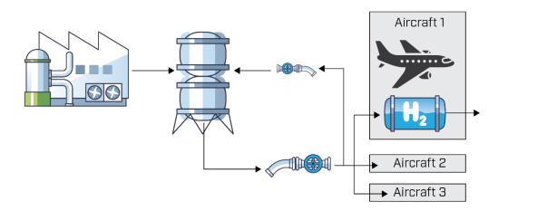

This article investigates the development of hydrogen, a green fuel working towards a more sustainable planet. Recent breakthroughs in technology are accelerating progress towards hydrogen becoming the next viable alternative to kerosene. The article examines agreements between major corporations within the sector and reviews reports designing and brainstorming various strategies to integrate hydrogen fuel into aircraft and airport infrastructure in the near future. By exploring these developments, it provides insight into how hydrogen may transform sustainable aviation.
Page Title
Introduction
Global CO₂ emissions from aviation have quadrupled since the 1960s (Ritchie, 2024), but is this due to demand or lack in significant advances in efficiency?
The two are mutually dependent, as the rise of air transit increases - so does the emissions, even with more efficient aircraft.
However, with the development of hydrogen fuel it has the potential to significantly reduce harmful by-products.
Engineers are working to resolve the design challenges associated with hydrogen propulsion, aiming to achieve comparable performance levels to conventional kerosene fuel.
Examining in detail, this article provides an overview of the current state of this technology and examines the engineering innovations necessary to enable its practical implementation
Analysis and Discussion
Hydrogen fuel is a clean energy carrier that, when utilized does not produce carbon dioxide or other pollutants. Once the hydrogen is coupled with oxygen, the reaction generates energy and heat - with water vapour as the only by-product. One property of Hydrogen that makes it attractive as a competitor to kerosene is it's high energy per mass which is approximately three times greater (Adler and Martins, 2023). This comparison is illustrated in Table 1 - the data highlights a clear distinction between kerosene (Jet A) and hydrogen's higher energy density and absence of carbon dioxide emissions.
Table 1: Energy density and CO₂ emissions on aviation fuels
The two main methods of utilizing hydrogen in aircraft is via combustion in gas turbines and electrochemical conversion in fuel cells. During the combustion method, liquid hydrogen must first be vapourised before it can enter the combustion chamber where it is mixed with oxygen and ignited. The high-temperature gases produced expand rapidly and generate thrust inside the turbine. Although hydrogen is better for the environment than combusting kerosene, it does produce nitrogen oxides (Cranfield Aerospace Solutions, 2024). This is because ideally, the hydrogen would only react with oxygen but the high-temperatures also cause nitrogen in the air to react too. Here is the chemical equation:
2H₂ + O₂ + 4N₂ → 2H₂O + 2NO + 4N₂ + heat (energy)
Hydrogen-Electric propulsion also involves combining the hydrogen and oxygen but within a fuel cell. However, electrical power is produced and this electricity is supplied to the electric motors connected to the planes propellers or fans. Compared to combustion, this method doesn't produce any nitrogen oxides as it's an electrochemical reaction.
Design Challenges
The process of accommodating hydrogen fuel provides many engineering obstacles. It has a low volumetric energy density which means it requires cryogenic (-253°C) or high-pressure storage. According to Dang et al. (2025) the connections between the
storage tank and the piping, because of differing thermal expansion rates, poor assembly,
high pressure, and the alternating stresses experienced during aircraft take-off and landing,
can become loose. As a result, this area of the aircraft is more prone to significant hydrogen leakage compared with other regions of the tanks. Here is an illustration taken from the study:

Unfortunately, airports currently lack the correct infrastructure to support large-scale implementation of hydrogen fueled aircraft.
Substantial investment is needed to execute safe and regulated refueling networks, both in cost and complex planning.
Also, current airport procedures would have to be modified.
Another key concern is material compatibility, hydrogen can induce embrittlement in certain metals it would be crucial to introduce advanced alloys or protective coatings.
Furthermore, precise management of heat, weight and aerodynamic efficiency must be standardised to ensure performance and safety standards are followed.
Environmental and Economic Advantages
Hydrogen fuel could enable near-zero aviation when produced using sustainable manufacturing techniques to create green hydrogen.
This is known as electrolysis, with electricity sources of solar panels, wind turbines and hydropower is used to power the process.
As stated prior, hydrogen combustion's only waste product is water vapour (with minimal NOₓ), there is no particulate matter generated - which improves air quality and the absence of soot means there is no contribution to radiative forcing.
Airbus representative, Llewellyn (2021) stated that hydrogen propulsion has the lowest cost per ton of CO₂ avoided compared to all other methods for decarbonizing air transportation.
Recent Research and Industry Developments
New research breakthroughs and industry developments are bringing us closer to hydrogen-powered flight than ever before.
In June 2025, Airbus and MTU Aero Engines signed a Memorandum of Understanding which outlines a three-step roadmap for the development of a hydrogen-powered fuel cell engine.
Furthermore, studies have been published this year mapping out designs for liquid hydrogen pipelines and hydrant systems to support future hydrogen-powered aircraft.
Krog et al. (2025) published a study analysing refueling concepts, with transport and distribution pipelines with recycling possibilitiess; an illustration of their proposed system is shown here.

As research progresses and infrastructure concepts mature, hydrogen-powered aircraft are steadily transitioning from long-term ambition to achievable future technology.
Dang, X., Zhong, M., Jia, W., Yang, X., Liu, H., Shao, Y. & Yang, Z. (2025) Simulation Analysis of the Leakage and Diffusion Risk of a Hydrogen Storage System in Hydrogen Aircraft. Available at: https://www.mdpi.com/2226-4310/12/6/489
(Accessed: 12 November 2025).
Krog, H. A., Jooss, Y., Fyhn, H., Nekså, P. & Hjorth, I. (2025) Large‑scale LH2 pipeline infrastructure concept for airports.
https://arxiv.org/pdf/2506.09410 (Accessed: 17 November 2025).